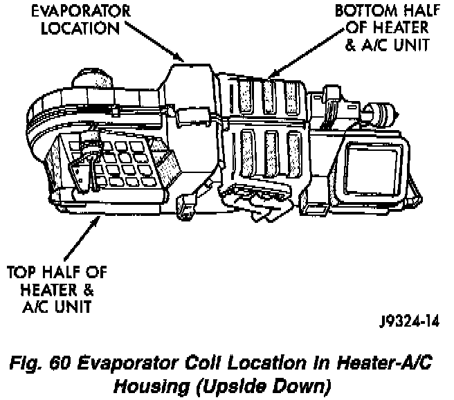

Installation
Fig.60 Evaporator Core Location In Heater-A/C Housing (Upside Down):

INSTALLATION
1. Position the evaporator coil in the bottom half of the heater-A/C housing.
2. Position the top half of the heater-A/C housing over the bottom half. Carefully turn the housing over. Install and tighten the screws that secure the two housing halves to each other.
3. Snap on the center adaptor heat duct.
4. Install the heater-A/C unit.
Under Housing Assembly HVAC : Service and Repair : Heater-A/C Unit Service and Repair
NOTE: If a new (or replacement) evaporator was installed, add 2 ounces of refrigerant oil to compensate for the volume of the new component.